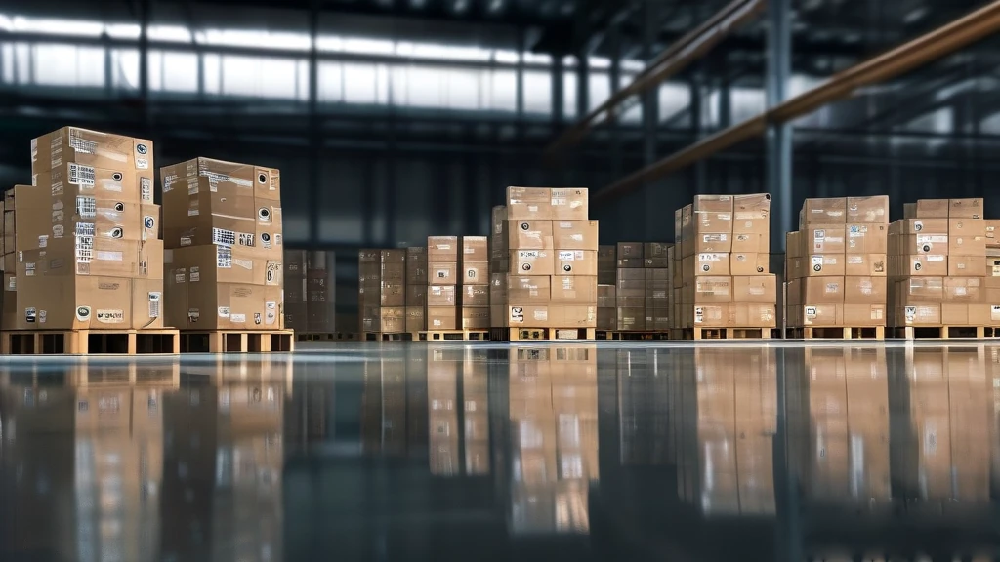
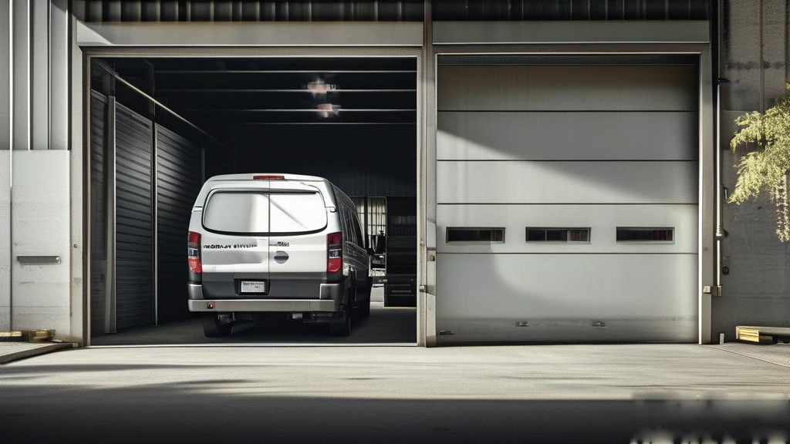

圖片由 AI輔助創作Image by AI
【鄭哥點評】欄目：鄭哥博客點評｜日期：2026-11-26
我做外貿廿六年，最貴嘅一課係一句話：貨唔喺你手，錢已經出去，你就唔係老闆——你只係一個付咗錢嘅保管員。呢幾日香港倉裡面嗰六十萬顆 H200，在我眼中就係呢句話嘅實物版。

圖片由 AI輔助創作Image by AI
一、六十萬顆，堆在關境之外
路透社 2026 年 11 月 5 日引述知情人士：約六十萬顆英偉達 H200 人工智能芯片目前存放在香港，等待運往中國內地；儘管內地科技企業需求強勁，中方尚未批准大規模進口。數家大型互聯網企業近幾個月各獲得約一萬顆，另有少量經中間商渠道進入，具體數量不詳。
呢條消息未獲中美官方同英偉達證實，但市場反應已經好誠實：內地一台配八張 H200 嘅伺服器，截至 2026 年 10 月底報價超過 600 萬元人民幣，約為一年前嘅三倍；受管制嘅新款 Blackwell 伺服器，每台報價超過 2000 萬元。
為咩偏偏係香港？因為香港喺中國關境外。貨擺喺香港，法律上未「進口」，所以可以合法擺住。呢個就係自由港嘅價值——但同時，佢亦係一個「無限期停車場」：貨款已經找清，每日燒倉租、燒貶值、燒機會成本。
來源：聯合早報《消息：北京未批大規模進口 約60萬英偉達H200晶片暫存香港》，2026-11-05｜https://www.zaobao.com.sg/news/china/story20261105-9954470

圖片由 AI輔助創作Image by AI
二、兩道關，缺一道都過唔去
呢條供應鏈上面有兩道獨立嘅關：華盛頓按條件許可出口，北京決定能唔能大批量進口。兩道關缺一道，貨就動唔到。
更準確嘅一句話係：美國開咗大門，中國自己上咗鎖。近幾個月，阿里、字節等主要網絡企業各只取得約 1 萬顆，另有少量經中間商同繞道管道進口，大規模進口仍未獲批。有消息人士講得更白：當局引導企業用「遠程網絡」方式，去使用安裝喺香港數據中心嘅芯片算力，同時管制芯片實物運入大陸。
即係話：算力可以用，卡唔准搬。呢個就係香港倉那六十萬顆嘅真正用途——它們係離岸算力，唔係內地存貨。
呢個政策風險已經化成數字，寫喺英偉達財報度：據 2026 年 7 月 26 日結束嘅 2027 財年第二季 10-Q，公司上半年就 H200 超額庫存同採購義務計提 4 億美元；同期依新許可對中國嘅出貨，不到數據中心營收 1%。許可條件亦唔輕：出貨前要在美國受檢，芯片運回美國時被課 25% 關稅，而且英偉達唔可以轉嫁畀客戶，只可以自己吸收。
來源：BigGo 財經《Nvidia H200 約60萬顆卡在香港，中國力推半導體自立大規模卡關通關》（轉述路透及英偉達 10-Q）｜https://finance.biggo.com.tw/news/9cfaec47-9327-4e6a-9896-1cc956d084cc
圖片由 AI輔助創作Image by AI
三、11 月 17 日之後：賣方都唔玩了
當地時間 2026 年 11 月 17 日下午，英偉達在 2027 財年第三季度財報電話會上，由臨時首席執行官兼首席財務官科萊特·克雷斯宣布：公司已經停止向中國出貨獲得美國許可嘅 Hopper 系列數據中心產品，後續業績指引亦唔再包含相關收入。
呢句說話嘅意思係：連賣方都唔願意再為呢條政策通道押注。許可證有價，但政策風險無價——所以佢寧願把這部分收入從指引裡面抹走。
第二日，11 月 18 日，中國外交部發言人郭嘉昆回應稱，中方之前已經多次就美國輸華芯片問題闡明立場。同一日，美國商務部工業和安全局亦公布新規，針對先進芯片同伺服器嘅遠程訪問作出限制，並要求向印尼、馬來西亞、新加坡、泰國同巴西出口先進芯片須申請許可證，理由係呢啲國家轉運風險較高。
呢兩件事疊埋一齊睇：一邊關門，一邊把所有後門都編上號。
來源：騰訊新聞《英偉達停止對華出貨H200，外交部：已多次闡明原則立場》，2026-11-19｜https://news.qq.com/rain/a/20261119A0ASDJ00
圖片由 AI輔助創作Image by AI
四、門坎變咗：由「拿到貨」變成「開得出文件」
我做外貿咁多年，見過最貴嘅從來唔係貨，係紙。同樣一批貨，有最終用戶證明、有用途聲明、有乾淨嘅報關記錄，佢係正貨；缺一張，佢就係風險資產，隨時連貨帶錢一齊消失。
呢輪管制升級嘅方向好清楚：2026 年 11 月 18 日美國 BIS 新規，把「第三國數據中心遠程算力」都納入限制，並對印尼、馬來西亞、新加坡、泰國、巴西五國嘅先進芯片出口要求許可證。以前靠馬來西亞、中東機房「曲線進口」嘅路，被逐段標記。
同時市場上已經有判例：台灣基隆地檢署查出三人以偽造報關文件出口受管制品；另有涉及香港物流中介嘅案件，被指以虛假出口文件處理 H100／H200，相關資產被扣押超過 5000 萬美元。
所以我同做算力嘅朋友講嘅第一句話係：**唔好只問有冇貨，先問呢批貨嘅文件乾唔乾淨。**貨可以再搵，文件出事係補唔返嘅。
來源：美國之音《特習深圳峰會前夕 英偉達宣布停止向中國出售H200芯片》，2026-11-18｜https://www.voachinese.com/a/nvidia-stops-shipping-us-approved-ai-chips-to-china-20261118/8225011.html
圖片由 AI輔助創作Image by AI
五、鄭哥點評
六十萬顆卡在香港，係一堂最貴嘅供應鏈課：貨物嘅價值，唔係由市場需求決定，而係由「能唔能合法移動」決定。需求再旺，動唔到就等於零，而且每日仲要倒扣倉租同跌價。
呢件事亦講清「門坎」呢兩個字：以前門坎係錢，有錢就買得到卡；而家門坎係兩張紙——一張出口許可，一張進口批文。有錢都買唔到第二張。所以您之前講嘅三點平衡（錢、人脈、門坎），門坎呢一頭已經換咗內容。
價格係最誠實嘅指數：8 卡 H200 內地報價超過 600 萬、約一年前三倍，Blackwell 機超過 2000 萬。呢個價唔係反映性能，係反映「稀缺 + 風險溢價」。做貿易嘅人都知，靠政策缺口賺嘅錢，本質係賺風險費，唔係賺差價——風險費有一日會被收返。
所以英偉達自己都選擇唔玩：11 月 17 日停供，上半年計提 4 億美元。連賣方都唔肯為呢條通道押注，中間人憑咩覺得自己可以扛？
最後一句：算力這行，錢買得到卡，買不到批文。做得到嘅生意係「點樣把貨合法地送到用家手上」；做唔到嘅生意，係「賭政策會鬆」。前者係本事，後者係運氣。
圖片由 AI輔助創作Image by AI
\[Zheng Ge's Take\] Column: Zheng Ge's blog commentary | Date: 2026-11-26
Twenty-six years in foreign trade taught me one expensive lesson: if the goods are not in your hands and the money has already left, you are not the boss - you are a paid custodian. The six hundred thousand H200 chips sitting in Hong Kong warehouses this week are that sentence made physical.
圖片由 AI輔助創作Image by AI
1. Six hundred thousand chips, parked outside the customs border
Reuters reported on 5 November 2026, citing people familiar with the matter, that about 600,000 Nvidia H200 AI chips are being held in Hong Kong awaiting shipment to mainland China, and that Beijing has not approved large-scale imports despite strong demand from Chinese technology firms. A handful of large internet companies each received roughly 10,000 units in recent months, with small volumes also entering through intermediaries.
Neither government nor Nvidia has confirmed the report, but the market has answered honestly: as of late October 2026 a server with eight H200 cards quoted above six million yuan on the mainland, roughly three times the price a year earlier, while export-restricted Blackwell servers quoted above twenty million yuan each.
Why Hong Kong? Because it sits outside China's customs border. Goods parked there are not legally 'imported', so they can sit there lawfully. That is the value of a free port - and also what turns it into an indefinite car park: the goods are already paid for, and every day burns storage, depreciation and opportunity cost.
Source: 聯合早報《消息：北京未批大規模進口 約60萬英偉達H200晶片暫存香港》，2026-11-05 | https://www.zaobao.com.sg/news/china/story20261105-9954470
圖片由 AI輔助創作Image by AI
2. Two gates - missing either one stops everything
This supply chain has two independent gates: Washington licenses exports on conditions, Beijing decides whether bulk imports may land. Miss either and nothing moves.
Put more precisely: America opened the front door and China put its own lock on it. In recent months Alibaba, ByteDance and other major internet firms each obtained only about 10,000 units, with small volumes arriving through intermediaries and detours, while large-scale imports remain unapproved. One source puts it bluntly: the authorities steer firms to use compute installed in Hong Kong data centres over remote networks, while controlling the physical movement of chips into the mainland.
In other words: the compute may be used, the cards may not be moved. That is the real function of those 600,000 chips in Hong Kong warehouses - they are offshore compute, not mainland inventory.
The policy risk is already written into Nvidia's accounts. Per the 10-Q for the fiscal 2027 second quarter ended 26 July 2026, the company took a 400 million dollar charge in the first half for excess H200 inventory and purchase obligations, while shipments under the new licences accounted for under one per cent of data-centre revenue. The licence terms are no bargain either: goods must be inspected in the United States before shipment and face a 25 per cent tariff on return, which Nvidia cannot pass on to customers and must absorb in full.
Source: BigGo 財經《Nvidia H200 約60萬顆卡在香港，中國力推半導體自立大規模卡關通關》（轉述路透及英偉達 10-Q） | https://finance.biggo.com.tw/news/9cfaec47-9327-4e6a-9896-1cc956d084cc
圖片由 AI輔助創作Image by AI
3. After 17 November: even the seller walked away
On the afternoon of 17 November 2026, on its fiscal 2027 third-quarter earnings call, Nvidia's interim chief executive and finance chief Colette Kress said the company had stopped shipping US-licensed Hopper data-centre products to China, and that forward guidance no longer includes that revenue.
Read that plainly: even the seller no longer wants to bet on this policy channel. A licence has a price; policy risk does not - so the company would rather erase the revenue from its guidance.
The next day, 18 November, Chinese foreign ministry spokesman Guo Jiakun said Beijing had repeatedly stated its position on US chip exports to China. The same day, the US Bureau of Industry and Security published new rules restricting remote access to advanced chips and servers, and requiring licences for advanced chip exports to Indonesia, Malaysia, Singapore, Thailand and Brazil on transshipment-risk grounds.
Put the two together: one door closes, and every back door gets numbered.
Source: 騰訊新聞《英偉達停止對華出貨H200，外交部：已多次闡明原則立場》，2026-11-19 | https://news.qq.com/rain/a/20261119A0ASDJ00
圖片由 AI輔助創作Image by AI
4. The barrier moved: from getting stock to producing paperwork
In all my years of trade, the most expensive item was never the cargo. It was the paper. The same shipment, with an end-user certificate, a statement of use and clean customs records, is legitimate goods; missing one sheet, it becomes a risk asset that can vanish together with the money.
The direction of this round of tightening is plain. The BIS rules of 18 November 2026 bring remote access to computing in third countries under restriction and require licences for advanced chip exports to Indonesia, Malaysia, Singapore, Thailand and Brazil. The 'detour' routes through Malaysian or Middle Eastern data centres are being labelled segment by segment.
Cases already exist: Taiwan's Keelung prosecutors investigated three people for exporting controlled items on falsified shipping declarations, and a separate case involving a Hong Kong logistics intermediary alleged falsified export paperwork for H100 and H200 chips, with more than fifty million dollars in related assets seized.
So the first thing I tell friends in the compute trade is: do not ask whether there is stock. Ask whether the paperwork is clean. Stock can be found again. A paperwork failure cannot be undone.
Source: 美國之音《特習深圳峰會前夕 英偉達宣布停止向中國出售H200芯片》，2026-11-18 | https://www.voachinese.com/a/nvidia-stops-shipping-us-approved-ai-chips-to-china-20261118/8225011.html
圖片由 AI輔助創作Image by AI
5. Zheng Ge's Take
Six hundred thousand chips in Hong Kong are the most expensive supply chain lesson going: the value of goods is set not by demand but by whether they can legally move. Demand can be red hot; if the goods cannot travel, the value is zero - and storage and depreciation keep charging rent.
This also redefines the word barrier. The barrier used to be money: with money you could buy cards. Now it is two sheets of paper - an export licence and an import permit - and no amount of money buys the second one. In the balance of money, connections and barriers, the barrier side has changed substance.
Price is the honest index: eight-card H200 servers above six million yuan on the mainland, roughly triple a year ago, Blackwell machines above twenty million. That price reflects scarcity plus a risk premium, not performance. Anyone in trade knows money made from a policy gap is a risk fee, not a margin - and risk fees eventually get collected back.
Which is why Nvidia itself stepped out: shipments halted on 17 November, a 400 million dollar charge in the first half. When the seller will not bet on the channel, what makes an intermediary think it can carry it?
One last line: in compute, money buys cards, not permits. The business that works is getting goods to users legally. The business that does not is betting that policy will loosen. The first is skill; the second is luck.